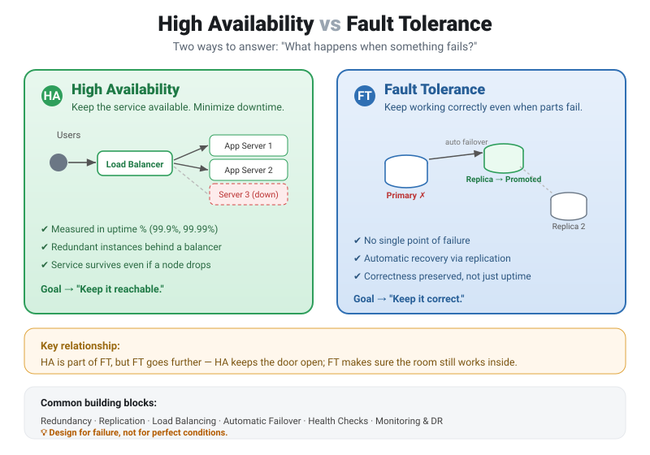
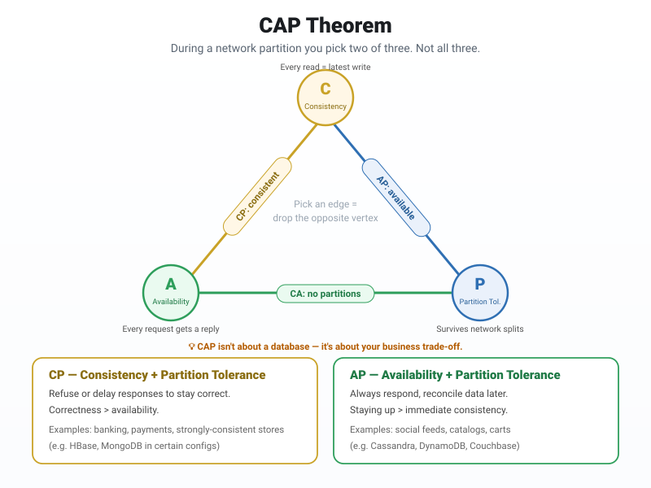
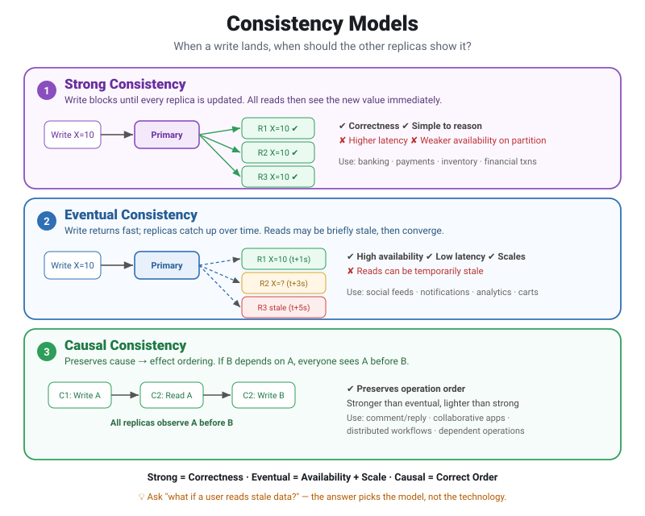
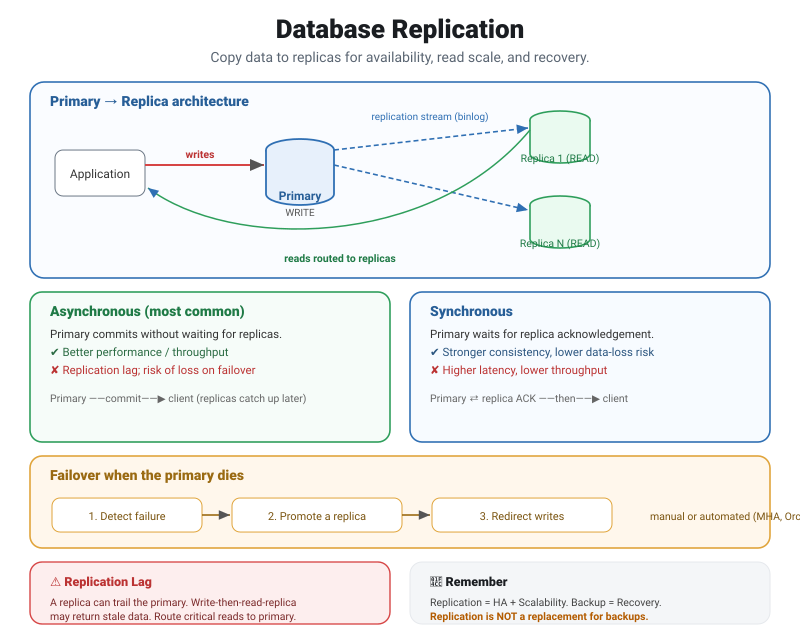

Before we start
Every distributed system is really a bet against failure. Servers crash, networks split, disks fill up, and a replica that was fine a second ago falls behind. You can't prevent all of that — so the job isn't to build a system that never breaks. It's to build one that keeps serving users while it breaks.
This guide builds that mindset in four steps. First we separate two goals people often confuse — High Availability (stay reachable) and Fault Tolerance (stay correct under failure). Then the CAP theorem shows the trade-off you can't escape once the network partitions. Consistency models turn that trade-off into a concrete choice about what users see when replicas disagree. And database replication is the mechanism that ties it all together in practice.
Read it top to bottom for the full arc, or jump to any part from the contents. Each section has its own diagram.
High Availability vs Fault Tolerance
These two get used interchangeably, but they answer different questions. One is about staying reachable; the other is about staying correct while parts of the system are broken.

🟢 High Availability (HA)
HA focuses on keeping the service available and minimizing downtime. The classic pattern is several application servers behind a load balancer: if one instance dies, the balancer routes traffic to the healthy ones and users barely notice. HA is usually measured in uptime percentages — 99.9%, 99.99%, and so on.
🔵 Fault Tolerance (FT)
FT focuses on keeping the system running correctly even when components fail. Think database replication with automatic failover: the primary goes down, a replica is promoted, and the system keeps serving correct data with no single point of failure.
👉 HA = "Keep the service available."
👉 FT = "Keep the system working even when something breaks."
HA is part of FT, but FT goes further. HA keeps the door open; FT makes sure the room still works once you're inside.
Common building blocks: Redundancy · Replication · Load Balancing · Automatic Failover · Health Checks · Monitoring & Disaster Recovery.
💡 Design for failure, not for perfect conditions.
The CAP Theorem
When you build a distributed system, a fundamental question shows up: can you have Consistency, Availability, and Partition Tolerance all at once? CAP says no — during a network partition, you must choose between consistency and availability.

- 🔵 Consistency (C) — every read gets the latest data.
- 🟢 Availability (A) — every request gets a response.
- 🔴 Partition Tolerance (P) — the system keeps operating despite network failures.
Since network partitions are a fact of life in distributed systems, you keep P and choose between the other two:
CP — Consistency + Partition Tolerance
Favor correctness over availability. The system may reject or delay requests to avoid returning stale data. Good when being wrong is unacceptable.
e.g. banking, payments, strongly-consistent stores
AP — Availability + Partition Tolerance
Favor staying up over immediate consistency. The system always answers and reconciles data later. Good when a brief staleness is fine.
e.g. social feeds, catalogs, shopping carts
💡 CAP isn't about blindly picking a database. It's about understanding your business requirements and making the right trade-off.
Consistency Models
In a distributed system, data is usually replicated across multiple nodes. The big question is: when one replica is updated, when should the others see that update? That's what consistency models define. Three matter most.

🔹 1. Strong Consistency
After a successful write, every subsequent read returns the latest value. Write
X = 10 and all reads see X = 10. It's simple to reason about and
best for correctness, but it costs higher latency and can reduce availability during
network failures.
Use cases: 🏦 banking · 💳 payments · 📦 critical inventory · 💰 financial transactions
🔹 2. Eventual Consistency
After a write, replicas may temporarily hold different values, but they eventually converge to the latest value. You get high availability, lower latency, and great scaling — at the cost of reads that may briefly return stale data.
Use cases: 📱 social feeds · 🔔 notifications · 📊 analytics · 🛒 shopping carts
🔹 3. Causal Consistency
Causal consistency preserves the cause-and-effect relationship between operations. If
Write A → Read A → Write B, then every replica observes A before B. It gives
stronger guarantees than eventual consistency without demanding that every operation be
globally synchronized.
Use cases: 💬 comment/reply systems · 👥 collaborative apps · 🔄 distributed workflows · 🧩 dependent operations
⚔️ Quick comparison
| Model | Behavior | Trade-off | Best for |
|---|---|---|---|
| Strong | Latest data immediately | Higher coordination / latency | Correctness |
| Eventual | Converges over time | Temporary staleness | Availability & scale |
| Causal | Preserves operation order | Medium complexity | Ordered, dependent ops |
💡 Interview tip: don't just say "we'll use strong consistency." Ask: what happens if a user reads stale data?
- Stale data unacceptable → Strong
- Temporary staleness acceptable → Eventual
- Operation ordering matters → Causal
Remember: Strong = Correctness · Eventual = Availability + Scale · Causal = Correct Order.
Database Replication
What happens when your SQL database becomes a bottleneck, or the primary goes down? Replication creates copies of your data on one or more replicas, so you can survive failures and spread read traffic.

🔹 Why replicate?
- ✅ High availability & failover
- ✅ Scale read traffic
- ✅ Disaster recovery
- ✅ Reporting / analytics on replicas
- ✅ Reduced downtime
🔹 Two important models
🟢 Asynchronous
The primary commits without waiting for replicas; they catch up after a small delay.
✔ Better performance ✘ Possible replication lag / data loss during failure
🔵 Synchronous
The primary waits for replica acknowledgement before confirming the write.
✔ Stronger consistency, lower data-loss risk ✘ Higher latency
🔹 Typical architecture
Application → Primary (WRITE) → Replicas (READ). In MySQL, changes propagate through the Binary Log (binlog) and are applied by the replicas.
🔹 Failover
If the primary fails: detect failure → promote a replica → redirect writes. Failover can be manual or automated with HA/orchestration tools (MHA, Orchestrator, Patroni).
⚠️ Replication lag: a replica can temporarily trail the primary. This bites when a user writes data and then immediately reads from a replica — route those critical reads to the primary, or read-your-writes.
📌 Remember: Replication = HA + Scalability, Backup = Data Recovery. Replication is not a replacement for backups.
Putting it together
These four ideas stack. HA and FT set your goal — reachable, and correct under failure. CAP frames the unavoidable trade-off once the network splits. Consistency models are how you cash out that trade-off at the data layer. And replication is the concrete mechanism that delivers availability, scale, and recovery — as long as you respect lag and keep real backups.
Reliable systems aren't built by luck. They're built by design — for the day something breaks.